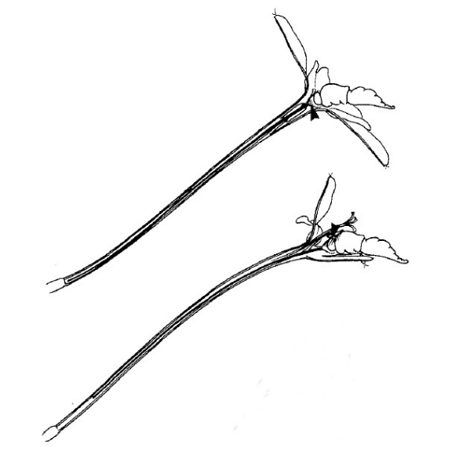
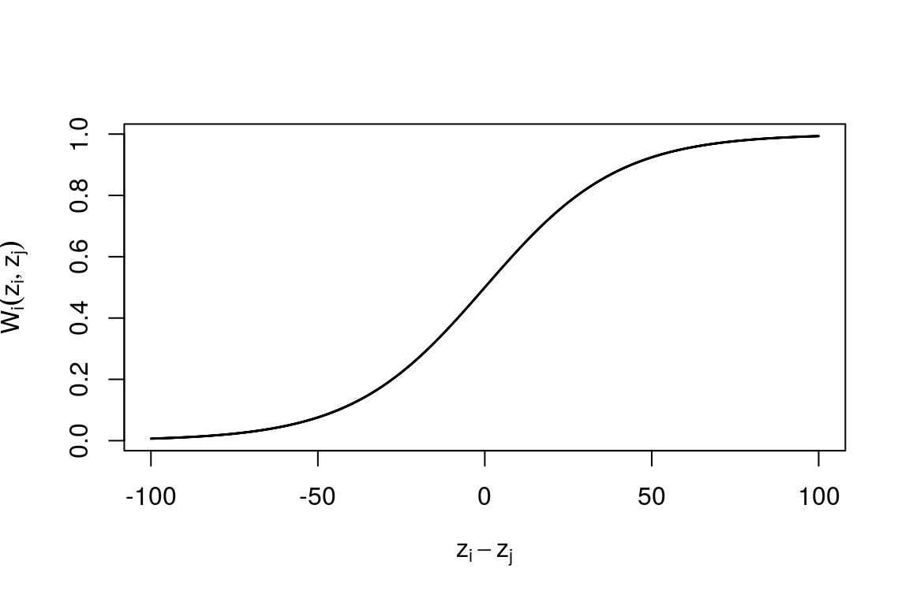
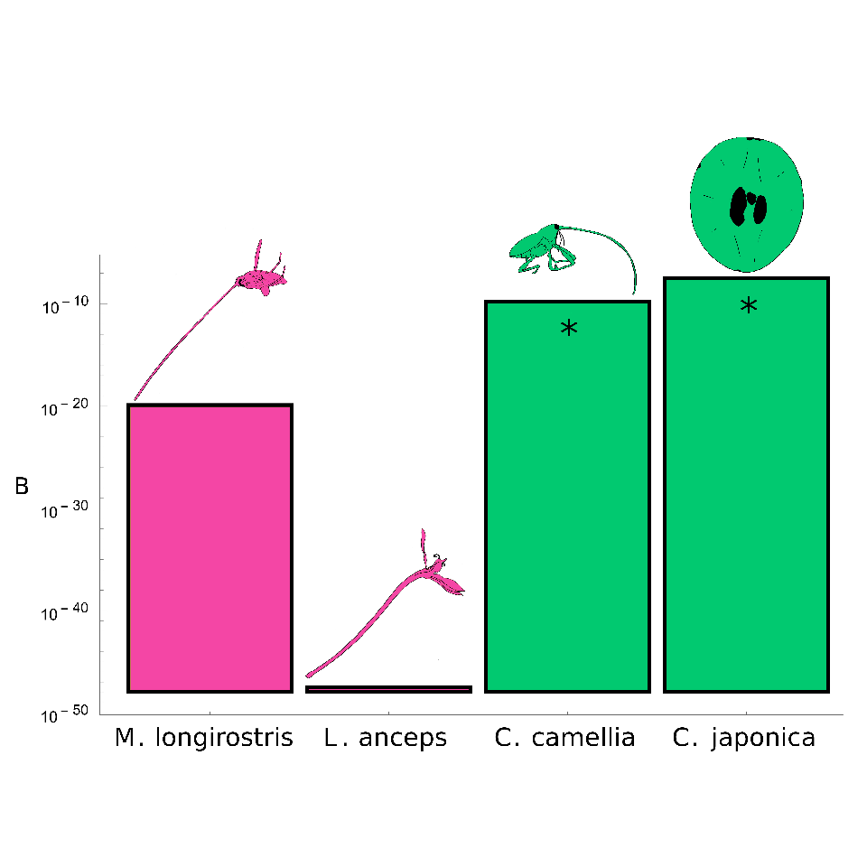
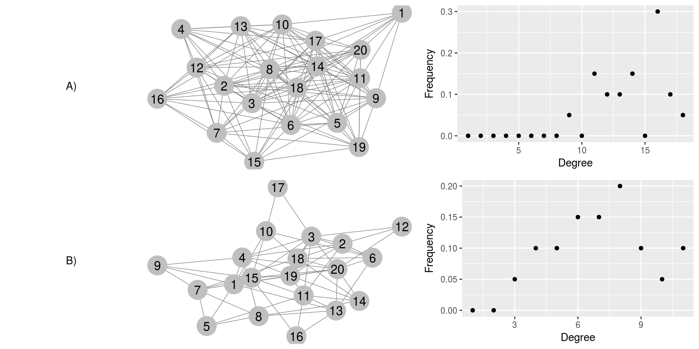

A coevolutionary theory of pollination
Bob Week
Introduction to proposed work
Coevolution, the reciprocal evolutionary response of two populations to their interaction, has long been thought to play a key role in driving the exaggeration of traits (Darwin 1859; Ehrlich and Raven 1964), promoting major evolutionary transitions such as the evolution of sexual reproduction (Jaenike 1978; Hamilton 1980; Lively 1987; Gandon and Otto 2007), manipulating the structure of ecological communities (Nuismer et al. 2013), influencing epidemiological dynamics (Anderson and May 1982; Lion and Gandon 2015; Lively 2016), and maintaining the diversity of life (Yoder and Nuismer 2010). However, despite coevolution’s long suspected importance, a rigorous understanding of both the mechanisms involved and the patterns produced by this process is still in its infancy. A clear understanding of the role that coevolution plays in the evolutionary process must account for the details of the mechanisms driving coevolution, be able to quantify its strength and significance in nature and determine its consequences for ecological communities. The proposed research seeks to develop innovative and novel contributions aimed at accomplishing these three main objectives that push beyond previous theoretical work.
Biological communities are notoriously difficult to capture mathematically because they consist of a dizzying magnitude of complexity. This complexity is manifested both in the network structure of the ecological interactions they are composed of as well as the processes that emerge from these interactions (such as nutrient cycling and community assembly). Since every species belongs to a community, confronting this complexity is a necessary task not only for community and ecosystem ecologists, but also for evolutionary biologists studying a single species. A cursory peek into past work reveals that we can incorporate a mind-numbing amount of detail involving the mating structure, genetic architecture, spatial dynamics and so on into models of the evolution and ecology of a species. But even with such a thorough investigation we typically cannot claim to have understood why this particular species is the way that it is because species do not exist in a vacuum. They co-occur with various other species and this geographic overlap inevitably leads to interspecific interactions. Of course there are models that have been developed to capture the evolutionary and ecological dynamics of interacting species (Roughgarden 1979; McGill et al. 2006; Abrams 2012; McPeek 2017). However, these models are typically limited to a small number of species even though we know that communities do not generally consist of just a few species. Incorporating such facts into our methods can alter the conclusions drawn. To be certain that, for example, the abiotic environment is responsible for the diversity of a species or clade, this hypothesis should be tested against competing ones such as the hypothesis that the observed diversity is the result of interspecific interactions.
Here the focus is not on diversity measured in terms of species richness nor is it on macroevolutionary processes. This work focuses on the microevolution and diversity of functional traits across a community derived from the ecological interactions occurring within that community. The basic aim is to develop a body of theory capable of testing biotic hypotheses for community-level phenomena. For example, is the distribution of generalization/specialization across a community the result of the form of interactions taking place, or is it due to environmental factors such as spatial or temporal vicariance?
To develop such a theory, various technical obstacles must be confronted. A major limiting factor of past theoretical work comes from a common modelling approach. As mentioned above, previous models capturing the relationship between community ecology and coevolution have focused on results pertaining to a small number of interacting species (Roughgarden 1979; McGill et al. 2006; Abrams 2012; McPeek 2017). The common approach in each of these studies is to derive a model of mean trait evolution alongside a model of demographic dynamics for each species involved. Hence, if there are \(N\) species under consideration, there will be \(2N\) dynamical equations used to model the system. This approach has provided some analytical results for a few species, but rapidly becomes intractable with additional species and becomes heavily dependent on idiosyncratic details, derailing any hope of elucidating general principles. However, many of the patterns observed in ecological communities span dozens, even hundreds of species (Manning and Goldblatt 1997; Morin 2009; Hubbell 2011). To overcome this difficulty a recent development in coevolutionary theory has taken the so-called mean-field approach with respect to the identity of species (Nuismer et al. 2013). This approach allows the reduction of a high-dimensional problem involving equations describing the evolution of each species within a community to a low-dimensional one that focuses on the community as a whole. With this approach analytical results can be derived that capture the statistical nature of the community, but without explicit conclusions for any particular member of the community. Hence, the stage has been set to develop a mathematically rigorous theory of coevolutionary community ecology. The ultimate goal of the proposed work is to contribute to this development through extending previous work on the coevolution of mutualistic networks by incorporating further biological elements than have been previously considered (such as behavior and demographic dynamics, see section Q3).
However, before such a contribution can be made there are three major steps to be taken. First, a more biologically realistic treatment of the mechanisms mediating the outcomes of ecological interactions needs to be incorporated into coevolutionary theory. The term mechanism here refers to the set of behavioral, physiological and morphological elements dictating the outcome of an interaction. For example, the length of the proboscis of a pollinator and the depth of the nectar tube of a flower have been shown to be very important in regulating the amount of nectar obtained by the pollinator and the number of pollen grains deposited by the flower (Pauw et al. 2009). Variation in this mechanism alone may explain a significant amount of functional diversity seen in nature. Thus, the first chapter will focus on deriving a new model of coevolution from first principles that takes into account more biological detail of the mechanism through which species interact. This new model will then be compared to an empirical data set involving a fly/flower pollination mutualism in order to demonstrate the amount of diversity that can explained purely by the structure of the interaction. The primary question driving this first chapter is; Can the structure of an interspecific interaction explain the patterns observed in the exaggeration of functional traits?
Secondly, a metric for the strength of coevolution within a community is required to quantify the role of coevolution in the community. A way to measure the strength of coevolution between a pair of species will be needed in order to derive this community-wide metric from first principles. Hence, a novel metric of pairwise-coevolution will be introduced. Because this metric provides an opportunity to tie theory to data, an important bridge to cross whenever possible, a novel method to estimate pairwise-coevolution will be the topic of the second chapter. The question motivating this chapter is; How can we measure the strength of coevolution in the wild?
Thirdly, a model of coevolution that incorporates the propensity for interactions to occur needs to be developed. Such a model will complement existing coevolutionary models that capture the outcome of an interaction by instead focusing the potential for an interaction to take place at all. Hence, in contrast to previous work (Nuismer et al. 2010), this approach will model non-random interactions between individuals based on functional trait values. There has been a great deal of empirical investigations that show relevance of non-random interactions within pollinator communities (Waser and Ollerton 2006). Hence, this approach is to some degree required to accurately capture the biology of such communities.
Accomplishing these first three steps will pave the way to brandishing a framework ripe for rigorous investigations of the relationship between coevolution and ecological communities. The goal of the fourth and final chapter will be to use the new coevolutionary model developed in the first and third chapters to construct a community-level model that tracks the statistical distribution of species-level mean traits, the community-wide distribution of the intensity of pairwise-coevolution as introduced in chapter two, and the community-wide distribution of a metric of specialization/generalization as introduced in chapter three. The underlying question of this chapter is; How does the structure of interactions between two guilds of species in a community affect the distribution of specialization/generalization?
To tether this work to the empirical world, each step is motivated by the details of specific pollination interactions. The primary example used throughout is the interaction between a long-tongued fly Moegistorhynchus longirostris and the flower it pollinates, Lapeirousia anceps, occuring in the coastal lowlands of South Africa (Manning and Goldblatt 1997; Pauw et al. 2009).
Q1: Can the structure of an interspecific interaction explain the patterns observed in the exaggeration of functional traits?
(Introduction to the offset-matching model of coevolution)
I begin by discussing the details of the mechanism mediating many pollination interactions and its implications for trait evolution. Historical characters are used to provide context, but the focus here is on the biology of interspecific interactions.
Mutualistic interactions provide an abundant supply of putative coevolutionary arms races. The most popular of these being the potentially coevolved orchid Angraecum sesquipedale and the moth that pollinates it Xanthopan morganii praedicta. The extreme length of this orchid’s nectar tube captured the attention of Charles Darwin (1862). Darwin formulated the hypothesis that this exaggerated trait may be the result of the reciprocal evolutionary responses between this orchid and whatever had been pollinating it (unknown to Darwin at the time) over many generations. In a rebuttal to a criticism of Darwins idea, Alfred Russel Wallace provided some logic to defend Darwin (Arditti et al. 2012). Wallace had been carefully thinking about the mechanism mediating the outcome of this interaction. He speculated that the orchid would be better off having a nectar tube that is slightly longer than the proboscis of the pollinator, forcing the pollinator to further penetrate the flower in order to obtain its nectar reward. Wallace figured this would cause the body of the pollinator to rub against the reproductive organs of the flower and thereby increase the probability of pollination (Figure 1). Hence, it can expected that selection induced by this interaction will select for slightly longer tube lengths. Likewise, with respect to the fitness of the pollinator, Wallace postulated that by having a proboscis slightly longer than the tube length of the flower, the pollinator would be able to extract more resources from each flower it visits. Thus, selection from this interaction would be reciprocally selecting for individuals from both populations with slightly longer traits. Assuming that these traits maintain ample genetic variation and that the primary source of selection on these traits is induced by their interaction, then, ignoring other processes such as migration and drift, the logical result is a never ending arms race towards more and more exaggerated, yet closely matched, traits.

- An illustration of the mechanism of pollination
Given the logic of Wallace’s argument, one might expect any pollination-based mutualism mediated by a mechanism analogous to the one described above to consistently produce highly exaggerated traits. However, a significant amound of variance in the degree of exaggeration among traits mediating such interactions across numersous plant-pollinator interactions has been observed (Anderson et al. 2010). What can account for such variance? Clearly there is an endless list of potential explanations. However, by focusing on explanations pitched entirely in terms of the structure of the interactions between pairs of species, a clear understanding of the role that coevolution plays in the maintenance of biological diversity can be developed.
Since different species are often placed under different physiological constraints and environmental conditions, it seems obvious that this variation should exist across species. However, even within species, a striking amount of variation in the outcomes of these processes has been observed. Take, for example, the interaction between the fly Moegistorhynchus longirostris and the flower it pollinates, Lapeirousia anceps (Pauw et al. 2009). The mechanism mediating this interaction is precisely the same as that described above for A. sesquipedale and X. morganii. The mean traits of the fly and flower species covary spatially with a correlation coefficient of 0.78, seeming to confirm the prediction that these traits should be closely matched. Yet, across eight populations the average length of the fly’s proboscis ranges from 43 mm to 86 mm and the average nectar tube of the flower across the same populations from 41 mm to 77 mm. Then, given that each population is undergoing the same interaction, why is there such stark phenotypic variability across these species’ distributions? To answer this question I propose to use a novel quantitative genetic model of coevolution derived from considering the mechanism mediating pollination interactions.
Derivation of the model:
Previous work on the coevolutionary theory of quantitative traits have focused on two primary mechanisms; trait matching and trait differences. In the case of mutualistic trait matching, it is assumed that the optimal phenotype of each species is the mean phenotype of the complementary species (Kiester et al. 1984). These models track the change in mean phenotype of each species. They can be derived from “first principles” by considering the fitness of an individual as a function of its trait value along with the trait value of its interacting partner. For the mathematics to be tractable it is required that fitness as a function of the trait takes the form of a Gaussian function. Assuming each individual interacts with precisely one individual of the complementary species, fitness will be of the form
- \[W_i(z_i,z_j)=W_{i,\max}\exp{\left( -\frac{(z_i-z_j)^2}{2\beta_i^2} \right)}\]
where \(z_i\) is the trait of an individual from species \(i\) and \(z_j\) is the trait of an individual of species \(j\). The greek letter \(\beta_i^2\) is the “width” of biotic selection being imposed on species \(i\) from species \(j\). By further assuming the distributions of traits in species i (denoted by \(\phi_i(z_i)\)) are normal we can calculate the mean fitness of each species.
- \[\overline W_i=\int_{{\mathbb{R}}^2} W_i(z_i,z_j)\phi_i(z_i)\phi_j(z_j)dz_idz_j\]
\[=C\exp{\left( -\frac{(\bar z_i-\bar z_j)^2}{2(\beta_i^2+\sigma_i^2+\sigma_j^2)} \right)}\]
where \(C\) is a compound constant involving the phenotypic variances and \(\bar z_i,\bar z_j\) represent the mean traits in species \(i\) and \(j\) respectively.
After a weak selection approximation (\(\beta_i^2\gg\sigma_i^2+\sigma_j^2\)), these mean fitnesses can be plugged into the Breeder’s equation (\(\Delta\bar z_i=G_i\partial_{\bar z_i}\ln\overline W_i\)) to obtain a model of mean trait dynamics. This model results in very well behaved linear dynamics described by
- \[\Delta\bar z_i=G_iB_i(\bar z_j-\bar z_i).\]
Here, \(G_i\) denotes the additive genetic variance of the trait \(z_i\), the small non-negative parameter \(0\leq B_i\ll1\) is the strength of biotic selection induced by species \(j\) onto species \(i\). This model predicts the mean traits for each species to converge to a common value that lies somewhere between their initial phenotypes. Hence, no escalation can occur in this model.
In contrast, Nuismer et al. (2010) developed a model based on trait differences that leads to pure escalation dynamics. One way to derive this model is to assume fitness follows a Gaussian that is translated a distance equal to the “root-width” of biotic selection. Here the width of biotic selection is denoted by \(\beta_i^2\) and its root is \(\beta_i\). See Lande (1976) for a brief discussion on this quantity. Hence,
- \[W_i(z_i,z_j)=W_{i,\max}\exp{\left( \frac{(z_j+\beta_i-z_i)^2}{2\beta_i^2} \right)}.\]
Under the assumption of weak selection this distance is quite large and the resulting dynamics are approximated by
- \[Δ\bar z_i=G_i\sqrt{B_i} + G_i B_i (\bar z_j-\bar z_i).\]
Alternatively, this model can be derived by modelling fitness with the sigmoid function (Figure (8))
- \[W_i(z_i,z_j)=\frac{W_{i,\max}}{1+e^{B_i(z_j-z_i)}}\]

- Sigmoid Fitness Curve
Unfortunately this function is not friendly to the clean algebraic analysis that Gaussian functions comply with and thus requires some extra steps. The extra steps involved are a series of Taylor approximations around \(B_i\) for resolving the nonlinearities that arise from taking this route. At each Taylor expansion, the approximation involves keeping terms that are linear with respect to \(B_i\), but neglects higher order terms. This results in the exact same dynamics as in eqn (6).
Originally Nuismer et al. (2010) took these approximations a step further by assuming terms of order \(B_i\) and higher are negligible. This resulted in the pure escalation model resulting from trait differences expressed as
- \[\Delta\bar z_i=G_i\sqrt{B_i}\]
Under this model the mean traits of each species will forever increase at a constant rate independently of one another. Though this model predicts an arms race, it misses a crucial ingredient described by Wallace, that the traits in each species need only be slightly longer than the traits of the complementary species to maximize fitness.
To obtain a model that captures Wallace’s notion of offset, I considered the fitness function
- \[W_i(z_i,z_j)=W_{i,\max}\exp{\left( -\frac{(z_j+\delta_i-z_i)^2}{2\beta_i^2} \right)}\]
where the additional term \(\delta_i\) represents the offset between the traits of species \(i\) and \(j\) that maximizes the fitness benefits of species \(i\) with respect to their interaction.
Using the same series of steps described for the derivation of the trait-matching model, the trait dynamics result in
- \[Δ\bar z_i=G_iB_iδ_i+G_iB_i(\bar z_j−\bar z_i).\]
By setting \(δ_i=0\) for both species the classic trait matching model, eqn (4), is retrieved. In hindsight of the above discussion it is easily seen that by setting \(δ_i=1/\sqrt{B_i}\), the offset-matching model is approximated by the pure escalation model when \(|\bar z_j−\bar z_i|\) is small. Hence, this new model, which has been dubbed the offset-matching model of coevolution, has coalesced two previously distinct models of coevolution into one unifying framework.
Outline of the approach:
Using the offset-matching model of coevolution, both the escalation and spatial covariation observed in nature can be explained. This offset-matching model can be used as a platform to understand why there is such variation in the outcomes of these arms races across the spatial distribution of coevolving pairs by focusing on the mechanism of the interaction as manifested by the offset parameter \(δ\). Returning to pollination as a motivating example the optimal offset will vary for each individual and each interaction an individual participates in. The offset for a fly will depend on, for example, the behavior of the fly (such as its flight pattern if it hovers while feeding) and the amount of nectar in the tube of the flower. Thus, by optimal offset for an individual it is meant the offset that will on average benefit this individual the most across all potential interactions.
By incorporating a variance in \(\delta\) across a metapopulation we can expect variance in the outcomes of this process. Hence, the trait diversity observed in Pauw et al (2009) may explained by variation in the mechanism mediating this interaction. To test this hypothesis a metapopulation model of coevolution will be constructed from the offset-matching model. This model will incorporate the stochastic effects due to drift, providing an underlying null model to be tested against. The variance of \(\delta\) may in principle be inferred from available data using maximum likelihood. The significance of this variance can then be tested for with a likelihood ratio test.
Q2: How can we measure the strength of coevolution in the wild?
In spite of the much anticipated importance of the coevolutionary process (Thompson 1994), there is virtually zero quantitative knowledge of its strength and prevalence in the wild. This lack of knowledge is largely due to the absence of generally applicable statistical approaches that yield quantitative estimates for the strength and significance of coevolution.
Our current understanding of coevolution’s importance rests upon methods that fall into two general classes: those that are broadly applicable but yield only qualitative evidence for coevolution and those that produce quantitative estimates for the strength of coevolution but can be applied only in a narrow range of systems. For example, one popular approach for inferring coevolution relies on measuring the spatial correlation between traits of interacting species and using significant interspecific correlations as evidence of a coevolutionary process (Berenbaum et al. 1986; Benkman et al. 2003; Hanifin et al. 2008; Toju 2008; Pauw et al. 2009). Strengths of this approach include the relative ease of collecting the relevant data and its broad applicability to a wide range of species interactions. The critical weakness of this approach, however, is that significant interspecific correlations are neither necessary nor sufficient for demonstrating coevolution (Janzen 1980; Nuismer et al. 2010) and can never yield more than qualitative evidence for coevolution.
In contrast, quantitative approaches for estimating the strength of coevolution, such as selective source analysis, require the collection of extensive trait and fitness data from interacting species and thus have proven difficult to employ in all but a few specialized systems (Brodie III and Ridenhour 2003; Ridenhour 2005; Toju and Sota 2005; Sletvold et al. 2010). As a consequence of these trade-offs in existing approaches, rigorous, quantitative estimates of the strength of coevolution in natural populations are extremely scarce.
To fill this critical gap a novel statistical method of inference is developed that derives maximum likelihood estimates for the strength of pairwise coevolution in natural systems by coupling the offset-matching model of coevolution to easily collected phenotypic data. This method is then applied to two well-studied interactions: the highly specific antagonism between the Japanese camellia fruit and its predatory weevil and the mutualism between the long-tongued fly M. longirostris and the flower it pollinates L. anceps. Broad application of this approach has the potential to answer long-standing evolutionary debates such as the importance species interactions play in the evolution of sexual reproduction (Hamilton 1980).
Outline of the approach:
The offset-matching model can be easily extended to predict the spatial distribution of population-level mean traits for a pair of interacting species that evolve in response to random genetic drift, abiotic selection, and coevolution. This has been done by Nuismer et al. (2010) for both the trait-matching and pure-escalation models. Crucially, this extension predicts that the distribution of trait means in the interacting species across a metapopulation will approach a bivariate normal distribution entirely described by five statistical moments: the metapopulation-level average of the population-level average key trait in each species among populations (\(μ_1\) and \(μ_2\)), the variance of the population-level mean trait in each species among populations (\(V_1\) and \(V_2\)), and the spatial association (covariance, \(C\)) between the key traits in each species. The key model parameters that quantify the strength of biotic selection acting on the two species are \(B_1\) and \(B_2\). Any selective agents acting independently of the interaction are captured collectively by the strengths of abiotic selection on each species; \(A_1\) and \(A_2\). All four of these model parameters are required to be non-negative and small (\(≪1\)). Denoting the optimal phenotype with respect to abiotic selection by θi and the effective population size by ni for species i, classical quantitative genetic assumptions lead to the following recursion equations for the statistical moments describing the metapopulation:
- \[\mu_i'=\mu_i+G_i{\left[ B_i\delta_i+B_i(\mu_j-\mu_i)+A_i(\theta_i-\mu_i) \right]}\]
\[V_i'=(1-2A_iG_i)V_i+2B_jG_j(C-V_i)+G_i/n_i\]
\[C'=(1-A_1G_1-A_2G_2)C+B_2G_2(V_1-C)+B_1G_1(V_2-C).\]
Because the models predict a bivariate normal distribution of traits, calculating the likelihood of observing any particular set of trait values in a pair of interacting species is straightforward. In particular, letting \(D=\{D_i\}_{i=1}^N\equiv\{(\bar z_1,\bar z_2)_i^\top\}_{i=1}^N\) denote the data (mean trait pairs of the interacting species from several populations) one obtains
- \[L(D|\mu,\Sigma)=\prod_{i=1}^N\frac{\exp{\left( -\frac{1}{2}(D_i-\mu)^\top\Sigma^{-1}(D_i-\mu) \right)}}{2\pi\sqrt{|\Sigma|}}, \ \Sigma={\left(\begin{matrix}V_1 & C \\ C & V_2\end{matrix}\right)}.\]
Using the equilibrium of system (4) expressions of the first five moments can be derived in terms of the selection strengths \(A_1,A_2,B_1\) and \(B_2\). Unfortunately these functions cannot be inverted to obtain the selection strengths as functions of the first five moments. Thus, I numerically solve for the \(A_i\) and \(B_i\) that maximize
- \[L(D|A_1,A_2,B_1,B_2)\equiv L(D|\mu(A_1,A_2,B_1,B_2),\Sigma(A_1,A_2,B_1,B_2)).\]
By maximizing this likelihood with respect to the strengths of biotic and abiotic selection acting on the two species a quantitative estimate for the strength of coevolution is obtained under the assumption that the remaining model parameters have been accurately estimated. In addition to providing quantitative estimates for the strength of biotic selection, this method can be used to rigorously test for the presence of coevolution. Specifically, for a coevolutionary hypothesis to be supported, reciprocal selection must be demonstrated (Janzen 1980; Thompson 1994). In this maximum likelihood framework, the long-standing and widely accepted definition of coevolution corresponds to demonstrating that the pair of parameters in this model that quantify the strength of biotic selection imposed on each species by the other are significantly greater than zero. By performing likelihood ratio tests, support for the coevolutionary hypothesis can be compared relative to support for the non-coevolutionary null hypotheses of unilateral evolution where \(B_1=0\) or \(B_2=0\), or evolution entirely independent of species interactions where \(B_1=0\) and \(B_2=0\) (Figure 15). Due to the nested structure of these models, I can directly compare the likelihood of coevolution against the likelihoods of these null models by approximating p-values. Figure 15 shows that both \(p_1\) and \(p_2\) need to be less than the significance threshold α to support a coevolutionary hypothesis.

- Relationships between the coevolutionary hypothesis and non-coevolutionary hypotheses
Restricting the selection parameters \(B_i\) to match the null hypotheses of unilateral evolution (\(B_1=0\) or \(B_2=0\)) results in a restricted likelihood (\(L(D|A_1,A_2,0,B_2)\) or \(L(D|A_1,A_2,B_1,0)\)), one that is always less than \(L(D|A_1,A_2,B_1,B_2)\). Then calculating the significance of \(B_1\), for example, is equivalent to computing the probability that the statistic
- \[\Lambda=2\ln{\left( \frac{L(D|A_1,A_2,B_1,B_2)}{L(D|A_1,A_2,0,B_2)} \right)}\]
lands within a given percentile of its distribution under the assumption of the null hypothesis \(B_1=0\). I adopt the standard 95th percentile as the threshold for determining significance.
According to Wilks’ Theorem, the distribution of this statistic is approximated by a Chi-square for large sample sizes. However, typical numbers of populations sampled are on the order of ten. Hence, this approximation fails and empirical distributions need to be calculated (Wasserman 2013). To do so, 250 sets of data under the null model are simulated for each comparison, with each set of data containing the number of populations equal to those sampled empirically. This provides adequate resolution (p-value estimates span 0 to 1 in increments of 0.004) while remaining computationally feasible. Calculations have been carried out in the statistical programming language \(R\) and scripts will be made available at:
Current Results:
This maximum likelihood approach was applied to two textbook examples of coevolution where previous work has implicated coevolution as a cause of trait exaggeration and spatial variability (Pauw et al. 2009; Toju 2011): the interaction between M. longirostris and L. anceps and the interaction between the camellia plant Camellia japonica and its seed predator, the weevil Curculio camellia. In both cases, the interactions are thought to depend largely on a single key trait in each species (fly proboscis and plant floral tube lengths or weevil rostrum length and camellia pericarp thickness). In addition to the essential phenotypic data, previous work in both systems provided valuable additional information that allowed us to estimate key background parameters such as the likely trait optima in the absence of the interaction (the “abiotic” optima).
The long-proboscid fly, M. longirostris, resides in lowland habitats near the coast of South Africa and pollinates a guild of at least 20 plant species (Manning and Goldblatt 1997). Among these species, the most widespread is L. anceps, a long-tubed perennial whose distribution extends outside the range of M. longirostris (Pauw et al. 2009). Crucial to this analysis, the likely optimal tube and proboscis lengths for these species in the absence of this particular interaction was estimated. Using the phenotypic data published by Pauw et al. (2009), these parameters were inferred by averaging the trait values of additional species within the pollination assemblage.
The biotic selection strengths \(B_1\) and \(B_2\) on M. longirostris and L. anceps, respectively, do not statistically differ from zero (\(p_1\approx\) 0.968, \(p_2\approx\) 0.736, see Figure 15). Thus, this analysis fails to support the hypothesis of strict pairwise coevolution in this system. The failure to find evidence of pairwise coevolution in this interaction may result from its actual absence or because the richness of the plant-pollinator community creates a scenario where coevolutionary selection is more diffuse and driven by a large number of weak pairwise interactions (Fox 1988; Strauss et al. 2005). In such a case, this approach may not be sufficiently powerful to detect the weak coevolution attributable to a single pairwise interaction. It is also possible that coevolution in this system is driven largely by indirect effects, undetectable with this approach, as has been recently suggested by Guimarães Jr et al. (2017).

- Inferred strengths of biotic selection. The asterisk (*) represents statistical significance.
This analysis of a plant-pollinator interaction was complemented by an analysis of the antagonistic interactions between the C. camellia weevil, an obligate seed predator of the C. japonica fruit (Toju and Sota 2005). Female weevils bore holes into the woody pericarps of the camellia to oviposit their offspring. Inside the fruit, weevil larvae feed on the seeds of the camellia up until the fourth instar, at which time they exit the fruit and overwinter (Toju and Sota 2005). These two species co-occur across Japan, although camellia populations where the weevil is absent also exist (Toju and Sota 2005). I estimated the strength of coevolution between the camellia and weevil using data from previously published work (Toju et al. 2011b,a) and the fact that male weevil rostrum lengths could be used as a proxy for the abiotic optimum of the female weevils since males do not interact with the camellia. The abiotic optima for the pericarp thickness of the camellia was inferred by averaging pericarp thicknesses across populations where weevils are absent. Both \(B_1\), the strength of biotic selection on the weevil, and \(B_2\), biotic selection on the camellia plant, significantly differed from zero (\(p_1\approx\) 0, \(p_2\approx\) 0, Figure 17). Hence, evidence for pairwise coevolution between the seed-eating weevil C. camellia and its host plant C. japonica has been founds. Unlike the plant-pollinator system, this interaction involves just two species. Hence, there is no risk of diffusive coevolution masking the pairwise coevolutionary signal, making it easier to detect.
These results demonstrate that coupling existing coevolutionary models with a maximum likelihood approach allows the strength of coevolutionary selection to be estimated using routinely collected phenotypic data. By providing a methodology that does not rely on extensive and system specific experimental manipulation, this approach greatly expands the range of systems for which the strength of coevolutionary selection can be estimated, paving the road for a more quantitative and critical assessment of coevolution’s importance in natural systems. Therefore, when coupled with data from a broad range of empirical systems, this method holds the potential to settle long standing debates involving the importance of species interactions and coevolution in the evolution of various phenomena including phenotypic diversity, sexual reproduction, community structure, and epidemiological dynamics (Hamilton 1980; Anderson and May 1982; Yoder and Nuismer 2010; Nuismer et al. 2013).
Q3: When does pollinator preference matter?
(Introduction to the non-random encounters model of coevolution)
Previous results in coevolutionary theory depend on the assumption that individuals encounter one another at random (Nuismer 2017). However, this is more likely to be the exception rather than the rule among interspecific interactions, particularly for pollination (Waser and Ollerton 2006). Indeed it is well known that pollinators are attracted to certain flowers through a wide variety of cues including visual and olfactory stimuli (Willmer 2011). Thus, to accurately capture the biology of such interactions, it is necessary to consider the behavior of the organisms involved.
However, it is unclear what the effects of incorporating pollinator preference into models of coevolution will have on previously established results. To understand the potential implications of pollinator preference this section will focus on a method to incorporate this aspect into coevolutionary theory. A matured theory will take into account the plethora of traits, both functional and behavioral, involved in both species that mediate the occurance and outcome of interactions. However, for this initial development it will be assumed that there is only one trait in each species that dictates everything about their interaction. This would be biologically equivalent to assuming that pollinators choose the flowers they visit based on the length of the floral tube.
One potential implication of pollinator preference is on the diversity of traits across space. If preference is homogeneous across space, then it seems likely that spatial diversity will diminish. However, as noted in section Q1, there exists a large amount of spatial diversity in the empirical world. Hence, one potential explanation for this diversity is spatial heterogeneity in the preferences of pollinator species. Such an explanation compliments that posed in Q1 in which heterogeneity in mechanism is investigated as an explanation of the same pattern. It may be that the two combined can provide an accurate description of the reason why such diversity exists. However, this chapter will focus solely on an explanation by pollinator preference. The approach will be analogous to that take in Q1 but with variation in preference instead of variation in mechanism.
Outline of the approach
Free-living individuals within a population may exhibit a preference towards particular organisms with which they interact. This interaction preference can be represented by a statistical distribution across all possible trait values. Interestingly, this notion is related in many ways to the concept of a niche (Vázquez and Aizen 2006). The particular trait value an individual chooses to interact with can be modelled using a random variable defined by the interaction preference distribution. In reality this distribution may be a highly complex multi-modal function. However, for the sake of simplicity I start by assuming this distribution is normal with mean \(\kappa\) and variance \(\gamma^2\). These parameters have a biological interpretation; \(\kappa\) represents the phenotype an individual prefers to interact with and \(\gamma\) represents how focused the individual is on its preferred phenotype. Alternatively, \(\gamma\) can be thought of as a measure of generalization. However, the notion of generalization/specialization is typically restricted to the number of species a population is found to interact with.
To derive a model of mean trait dynamics, we first write down the fitness function of an individual of species \(i\) in guild 1 used to derive the offset-matching model
- \[W_i(z_i,z_j)=W_{1,\max}\exp{\left( -\frac{(z_j+\delta_i-z_i)^2}{2\beta_i} \right)}\]
Here \(z_i\) denotes the functional trait of an individual in species i (say the proboscis length of a pollinator or the nectar tube length of a plant). The next step is to incorporate the interaction preference of the individual. The density of this distribution is denoted \(\iota_i(z_j)\) and as implied above, is expressed as
- \[\iota_i(z_j)=\frac{1}{\sqrt{2\pi\gamma_i^2}}\exp{\left( -\frac{(z_j-\kappa_i)^2}{2\gamma_i^2} \right)}.\]
Thus, denoting the distribution of phenotypes for species \(i\) by \(\phi_i\), the mean fitness of an individual of species \(i\) with trait \(z_i\) is
- \[W^*_i(z_i)=\frac{1}{\int\phi_j(z_j)\iota_i(z_j)dz_j}\int W_i(z_i,z_j)\phi_j(z_j)\iota_i(z_j)dy.\]
Finally, the mean fitness of species i can be written as
- \[\overline W_i=\int W_i^*(z_i)\phi_i(z_i)dx.\]
Hence, the change in \(\bar z_i\) is
- \[\Delta\bar z_i=G_i\frac{\partial\ln\overline{W}_i}{\partial\bar z_i}.\]
Evaluating this expression will lead to a simple model of trait evolution that incorporates the interaction preference of individuals. This model can then be easily extended to a metapopulation model.
To understand if the variation observed in nature can be explained by variance in pollinator preference an approach analagous to that described in section Q1 will be taken. By incorporating a variance in \(\kappa\) across a metapopulation we can expect variance in the outcomes of this process. Hence, the trait diversity observed in Pauw et al (2009) may explained by variation in pollinator preference. To test this hypothesis a metapopulation model of coevolution will be constructed from the offset-matching model. This model will incorporate the stochastic effects due to drift, providing an underlying null model to be tested against. The variance of \(\kappa\) may in principle be inferred from available data using maximum likelihood. The significance of this variance can then be tested for with a likelihood ratio test.
Q4: When does pollination lead to specialization?
There are several ways to describe ecological communities (Morin 2009). One is taxonomic where the identities and abundances of species tend to be the primary focus. In this case the community can be broken down into sets of taxonomically related species called taxocenes. Another is functional where species are categorized by the ecological processes they engage in. These functional groups can be thought of as guilds, sets of species that partake in a similar use of resources, when (but not only when) the ecological processes that define the functional groups arise from inter-guild interactions centered around one guild attempting to procure resources from another. With this approach to describing a community of species, not only are the abundances of each species important for understanding the structure and dynamics of the community, but also the traits mediating the interactions and how both the traits and interactions evolve.
Here I use the latter description by focusing on interspecific interactions. Since a particular species may use different traits for each of the other species it interacts with, modelling the evolution of traits in a general community involving a wide variety of interaction types would require the development of multivariate models of trait evolution for each species across a mind-numbing number of possible interactions, giving rise to a highly complex model. But are the considerations of such immense detail necessary for the procurement of general principles underlying natural processes? This question elucidates two primary roles for the use of theory.
One use of theory is to tailor a model to the idiosyncratic details of a particular system in order to develop a quantitative understanding of the system. Using such an approach we may in principle predict the future state of a system or to infer events leading to the systems current state. For example, let us suppose that all of the species and interactions between them within a community have been fully described mathematically. Further suppose that accurate models of the evolution and demographic dynamics of each species have been derived from those descriptions. By tuning the parameters of the resulting models to reflect reality, we would be able to predict future population sizes and trait distributions, an enormous scientific achievement. However, this of course would require methods and data that do not exist at such a scale.
The second, which is the focus of the proposed work, is to discover basic principles that provide a qualitative understanding of the structure and behavior of the natural world. This approach maintains a more cognitive appeal by boiling down conclusions into statements that are made as simple as possible. By virtue of this goal, the associated mathematical models are developed to be as simple as possible. However, in order to derive such simple models from mechanistic considerations, a great deal of simplifying assumptions must be adopted. A reasonable question one should ask is “To what extent do the assumptions upon which a result has been obtained restrict the result from accurately capturing reality?” This question will be addressed for this project using simulations as will be discussed below.
The primary tool used for this project is theoretical quantitative-genetics. Hence, all of the assumptions of quantitative-genetic theory must be adopted. This includes assumptions such as the normality of phenotypic distributions, random mating, blending inheritance and constant additive genetic variance. Beyond the essential assumptions of quantitative genetic theory, I work with the two basic assumptions relevant at the community level: 1) The outcomes of interactions between any two members of separate guilds are mediated by the same traits in each species. This allows the theory to be developed around a single physical trait for each guild (such as proboscis or nectar tube lengths). 2) The mean phenotype and population size of any particular species are both treated as random variables. It will be assumed that for each species within a guild, these random variables are distributed independently and identically. This assumption transitions the models used from sets of equations describing the evolution and demographic dynamics of each species explicitly to a set of equations describing the dynamics of the distribution of traits and abundances of each guild as a whole. This last assumption is the essential component that makes this approach a mean-field approach. Starting with this set of assumptions, I will develop simple models of coevolving communities and use them to answer the following questions:
- What distribution of trait values across a community emerges from biotic selection?
- When does coevolution produce specialization?
This work takes the perspective that these two questions are intimately interwoven with each other. The coevolutionary process both effects and is affected by the network structure of the community as well as the distribution of functional traits across the community. The network structure of interspecific interactions determines the net biotic selection pressures on the traits that mediate the outcomes of such interactions. Hence, as these traits evolve the interactions they dictate evolve with them. Thus, trait evolution reciprocally imposes dynamics on the network structure of the community, creating a feedback loop. This observation is not particularly novel. Indeed, Nuismer et al. (2013) investigated various aspects of the relationship between coevolution and the network structure of mutualistic communities, finding that, among other results, strong matching coevolution tends to lead to higher modularity while weak matching coevolution results in nested communities.
The novelty of the proposed project comes from a goal to explicitly incorporate the behavior of the organisms with respect to their interaction preferences. Previous models of coevolution focus on the role of functional trait values in mediating the outcomes of interactions. Here, in addition to predicting the effects of ecological interactions on fitness, the decision to interact, or the propensity of interactions to take place at all is incorporated into the model of coevolution. Assuming the interaction preference of an organism has a genetic basis, the evolution of this behavioral trait can be modelled exactly as described in section Q3. Using this approach models can be developed that determine the necessary and sufficient conditions for specialized interactions to evolve.
The empirical focus will be on pollination-based interactions and communities composed of such interactions. Therefore two guilds will form the basic structure of these communities, one consisting of the flower species and the other consisting of the pollinator species. Fittingly, there is a long-standing debate in the pollination literature on whether or not pollination as a process tends to produce higher degrees of specialization or instead more generalized interactions (Willmer 2011). The argument for increased generalization comes from the idea that animal pollinators would profit from visiting any flower that benefits it. In turn, the various pollinators can act together as a selective force on floral traits to promote generalization in the flowers (Gómez and Zamora 2006). In contrast, it is thought that a plant would profit from having a pollinator that is specialized since this would increase the probability of conspecific pollen deposition (Willmer 2011). Hence, the floral traits attracting more specialized pollinators should be selected for. By taking into account the merits of both of these arguments, it seems that pollination will not necessary act to monotonically drive a community towards either specialization or generalization, but depends upon certain details of the members of the community as well as their environment. This line of reasoning motivates the further development of theory to clarify the conditions under which pollination produces generalization or specialization or perhaps to maintain some intermediate state.
Outline of the approach:
As mentioned in section Q3, \(\gamma\) can be thought of as representing the degree of generalization. However, this is not the typical measurement of generalization ecologists typically report. Usually, the notion of generalization/specialization is restricted to considerations of the number of other species a population is known to interact with. Yet, it is likely that individuals whom are less focused on interacting with a particular phenotypic value and instead tend to interact with a wide variety of values will also interact with a larger number of species. Hence, \(\gamma\) can be usefully thought of as the degree of generalization.
Since \(\gamma\) is a continuous trait, quantitative genetics can be used to model its evolution. However, because \(\gamma\) is a positive number, we cannot assume it is normally distributed within a species as required by quantitative-genetic assumptions. Instead, by assuming \(\gamma\) follows a log-normal distribution within any given species, the transformed variable \(g=\ln\gamma\) will be normally distributed. This allows the development of a model that captures the evolution of \(g\), the mean-log degree of generalization, using the breeders equation.
The distribution of \(\bar\gamma\), the mean degree of generalization of a species, across each guild comprising the community provides a way to describe the network structure of the community that is similar to the information provided by the degree distribution, the number of nodes with a particular degree (see Figure 23). If the community-level average \(\bar\gamma\) is small (which implies that species are highly specialized on average) and has low variance (which implies that most species are highly specialized), we can anticipate the community to be sparsely connected. In contrast, if the community-level average \(\bar\gamma\) is large (highly generalized species on average) and has low variance (most species are highly generalized), then we can anticipate the community to be highly connected (see Figure 23).
*Extending this model to one that describes the evolution of the distribution of \(g\) across the entire community will pave the way to theoretical answers for question 2 above.

- Network structure and degree distribution for A) high γ and B) low γ.
For sub-question 1 of this section, the focus is on functional trait evolution. Returning to the example of long-tongued flies and long-tubed flowers, the functional traits are the length of the tongues in the flies and the length of the tubes in the flowers. The coevolution of these traits has already been captured with the offset-matching model. However, that model contains the assumption of random encounters. Incorporating interaction preferences requires re-deriving the model in a way that incorporates non-random encounters. Denoting \(z\) the value of the functional trait (proboscis or tube length, for example), the resulting model describes the evolution of the guild-level mean and variance of the multivariate species-level mean trait \((\bar z,\bar κ,\bar g)\). This trait consists of one physical component, the mean functional trait of the species (\(\bar z\)), and two behavioral components, the mean preference of the species (\(\bar\kappa\)) and the mean generalization of the species (\(\bar g\)). For the sake of parsimony these traits are assumed to be genetically independent of one another.
By extending the model developed in chapters 1 and 3 to a community-wide model, the biotic causes of specialization can be explored. In particular, denoting \(\mu_i=({\mathbb{E}}\bar z_i,{\mathbb{E}}\bar κ_i,{\mathbb{E}}\bar g_i)^\top\) and \(\nu_i={\left( {\mathbb{V}}\bar z_i,{\mathbb{V}}\bar κ_i, {\mathbb{V}}\bar g_i \right)}^\top\) to be the multivariate mean vector and vector of variances of the three traits across guild \(i\), it would be ideal to find relatively simple equations describing the evolution of these quantities of the form
\[\Delta\mu_i=f(\mu_i,\nu_i,\mu_j,\nu_j)\]
\[\Delta\nu_i=g(\mu_i,\nu_i,\mu_j,\nu_j).\]
The parameters anticipated to be most important in determining when specialization will occur are the strengths of biotic selection (\(B\)) and the optimal offset (\(δ\)). By imposing specific statistical distributions on these parameters across the community, it may be discovered that, for example, a high variance in \(δ\) inevitably leads to the specialization in interactions between a subset of the community.
Although biotic selection is an important component of coevolution, it alone does not represent a coevolutionary process. Coevolution is defined by the reciprocal response of two interacting populations to selection induced by their interaction. Denoting \(B_1\) as the random variable representing the strength of biotic selection induced on guild 1 by guild 2 and \(B_2\) the random variable representing strength of selection on guild 2 by guild 1, then \(\sqrt{B_1B_2}\), the geometric mean of the two biotic selection strengths is a natural way to quantify the potential for coevolution between the two guilds. Thus, the distribution of this geometric mean across interacting pairs will capture the relevance of coevolution throughout the community. Relating the properties of this distribution, such as its mean and variance, to specific ecological and evolutionary outcomes, such as the evolution of specialization, will provide important insight into the many ways that coevolution shapes ecological communities.
This analytical approach will also be complemented by a set of genetically-explicit individual-based simulations to probe the less tractable situations that arise when assumptions are broken. For example, if the distribution of population sizes across the community is allowed to fluctuate according to the mean fitness’s of those populations (already defined by the evolutionary equations required to derive the coevolutionary model), it is not clear whether or not the resulting model will be keen for traditional mathematical analysis. Hence, for situations such as this one, finely tuned high resolution simulations of this process may provide more insight than raw mathematical analysis.
References
Abrams, P. A. 2012. The eco-evolutionary responses of a generalist consumer to resource competition. Evolution 66:3130–3143. Wiley Online Library.
Anderson, B., J. S. Terblanche, and A. G. Ellis. 2010. Predictable patterns of trait mismatches between interacting plants and insects. BMC Evolutionary Biology 10:204. BioMed Central.
Anderson, R. M., and R. May. 1982. Coevolution of hosts and parasites. Parasitology 85:411–426. Cambridge University Press.
Arditti, J., J. Elliott, I. J. Kitching, and L. T. Wasserthal. 2012. “Good heavens what insect can suck it”–Charles darwin, angraecum sesquipedale and xanthopan morganii praedicta. Botanical Journal of the Linnean Society 169:403–432. Wiley Online Library.
Benkman, C. W., T. L. Parchman, A. Favis, and A. M. Siepielski. 2003. Reciprocal selection causes a coevolutionary arms race between crossbills and lodgepole pine. The American Naturalist 162:182–194. The University of Chicago Press.
Berenbaum, M., A. Zangerl, and J. Nitao. 1986. Constraints on chemical coevolution: Wild parsnips and the parsnip webworm. Evolution 1215–1228. JSTOR.
Brodie III, E., and B. Ridenhour. 2003. Reciprocal selection at the phenotypic interface of coevolution. Integrative and Comparative Biology 43:408–418. Oxford University Press.
Darwin, C. 1859. On the origin of species by means of natural selection, or, the preservation of favoured races in the struggle for life. J. Murray.
Darwin, C. 1862. The various contrivances by which british and foreign orchids are fertilised by insects. John Murray, London.
Ehrlich, P. R., and P. H. Raven. 1964. Butterflies and plants: A study in coevolution. Evolution 18:586–608. Wiley Online Library.
Fox, L. R. 1988. Diffuse coevolution within complex communities. Ecology 69:906–907. Wiley Online Library.
Gandon, S., and S. P. Otto. 2007. The evolution of sex and recombination in response to abiotic or coevolutionary fluctuations in epistasis. Genetics 175:1835–1853. Genetics Soc America.
Gómez, J. M., and R. Zamora. 2006. Ecological factors that promote the evolution of generalization in pollination systems. Plant-pollinator interactions: from specialization to generalization. University of Chicago Press, Chicago 145–166.
Guimarães Jr, P. R., M. M. Pires, P. Jordano, J. Bascompte, and J. N. Thompson. 2017. Indirect effects drive coevolution in mutualistic networks. Nature.
Hamilton, W. D. 1980. Sex versus non-sex versus parasite. Oikos 282–290. JSTOR.
Hanifin, C. T., E. D. Brodie Jr, and E. D. Brodie III. 2008. Phenotypic mismatches reveal escape from arms-race coevolution. PLoS biology 6:e60. Public Library of Science.
Hubbell, S. P. 2011. The unified neutral theory of biodiversity and biogeography (mpb-32). Princeton University Press.
Jaenike, J. 1978. An hypothesis to account for the maintenance of sex within populations. Evol. theory 3:191–194.
Janzen, D. H. 1980. When is it coevolution. Evolution 34:611–612.
Kiester, A. R., R. Lande, and D. W. Schemske. 1984. Models of coevolution and speciation in plants and their pollinators. The American Naturalist 124:220–243. University of Chicago Press.
Lande, R. 1976. Natural selection and random genetic drift in phenotypic evolution. Evolution 30:314–334. Wiley Online Library.
Lion, S., and S. Gandon. 2015. Evolution of spatially structured host–parasite interactions. Journal of evolutionary biology 28:10–28. Wiley Online Library.
Lively, C. M. 2016. Coevolutionary epidemiology: Disease spread, local adaptation, and sex. The American Naturalist 187:E77–E82. University of Chicago Press Chicago, IL.
Lively, C. M. 1987. Evidence from a new zealand snail for the maintenance of sex by parasitism. Nature 328:519–521. Springer.
Manning, J. C., and P. Goldblatt. 1997. TheMoegistorhynchus longirostris (diptera: Nemestrinidae) pollination guild: Long-tubed flowers and a specialized long-proboscid fly pollination system in southern africa. Plant Systematics and Evolution 206:51–69. Springer.
McGill, B. J., B. J. Enquist, E. Weiher, and M. Westoby. 2006. Rebuilding community ecology from functional traits. Trends in ecology & evolution 21:178–185. Elsevier.
McPeek, M. A. 2017. Evolutionary community ecology. Princeton University Press.
Morin, P. J. 2009. Community ecology. John Wiley & Sons.
Nuismer, S. L. 2017. Introduction to coevolutionary theory. Macmillan Education.
Nuismer, S. L., R. Gomulkiewicz, and B. J. Ridenhour. 2010. When is correlation coevolution? The American Naturalist 175:525–537. JSTOR.
Nuismer, S. L., P. Jordano, and J. Bascompte. 2013. Coevolution and the architecture of mutualistic networks. Evolution 67:338–354. Wiley Online Library.
Pauw, A., J. Stofberg, and R. J. Waterman. 2009. Flies and flowers in darwin’s race. Evolution 63:268–279. Wiley Online Library.
Ridenhour, B. J. 2005. Identification of selective sources: Partitioning selection based on interactions. The American Naturalist 166:12–25. The University of Chicago Press.
Roughgarden, J. 1979. Theory of population genetics and evolutionary ecology: An introduction. Macmillan New York NY United States 1979.
Sletvold, N., J. M. Grindeland, and J. Ågren. 2010. Pollinator-mediated selection on floral display, spur length and flowering phenology in the deceptive orchid dactylorhiza lapponica. New Phytologist 188:385–392. Wiley Online Library.
Strauss, S. Y., H. Sahli, and J. K. Conner. 2005. Toward a more trait-centered approach to diffuse (co) evolution. New Phytologist 165:81–90. Wiley Online Library.
Thompson, J. N. 1994. The coevolutionary process. University of Chicago Press.
Toju, H. 2008. Fine-scale local adaptation of weevil mouthpart length and camellia pericarp thickness: Altitudinal gradient of a putative arms race. Evolution 62:1086–1102. Wiley Online Library.
Toju, H. 2011. Weevils and camellias in a darwin’s race: Model system for the study of eco-evolutionary interactions between species. Ecological research 26:239–251. Springer.
Toju, H., H. Abe, S. Ueno, Y. Miyazawa, F. Taniguchi, T. Sota, and T. Yahara. 2011a. Climatic gradients of arms race coevolution. The American Naturalist 177:562–573. University of Chicago Press Chicago, IL.
Toju, H., and T. Sota. 2005. Imbalance of predator and prey armament: Geographic clines in phenotypic interface and natural selection. The American Naturalist 167:105–117. The University of Chicago Press.
Toju, H., S. Ueno, F. Taniguchi, and T. Sota. 2011b. Metapopulation structure of a seed–predator weevil and its host plant in arms race coevolution. Evolution 65:1707–1722. Wiley Online Library.
Vázquez, D. P., and M. A. Aizen. 2006. Community-wide patterns of specialization in plant–pollinator interactions revealed by null models. Plant–pollinator interactions: from specialization to generalization 200–219. University of Chicago Press Chicago.
Waser, N. M., and J. Ollerton. 2006. Plant-pollinator interactions: From specialization to generalization. University of Chicago Press.
Wasserman, L. 2013. All of statistics: A concise course in statistical inference. Springer Science & Business Media.
Willmer, P. 2011. Pollination and floral ecology. Princeton University Press.
Yoder, J. B., and S. L. Nuismer. 2010. When does coevolution promote diversification? The American Naturalist 176:802–817. The University of Chicago Press.